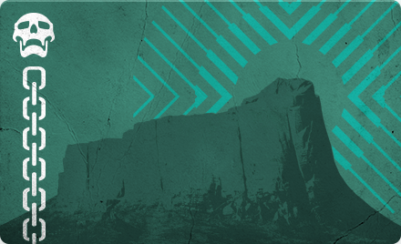
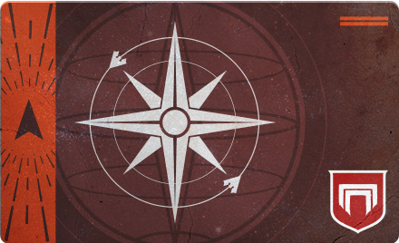

The Story of Destiny 2
The story of Destiny 2 is a sprawling epic set in a futuristic universe where humanity, scattered across different planets and moons, faces constant threats from various hostile alien races. Here's a condensed version of the story thus far:
Year 0: Before Destiny 2:
Centuries ago, humanity experienced a golden age of technological advancement, thanks to the discovery of the Traveler, a mysterious celestial being that brought prosperity and new worlds to explore. However, this age of enlightenment was short-lived as an ancient enemy known as the Darkness, followed by its army, the Hive, descended upon humanity, leading to a cataclysmic event known as the Collapse. The Collapse brought ruin to human civilization, and the Traveler was left crippled above Earth. The Last City and the Guardians: In the aftermath of the Collapse, what remained of humanity gathered beneath the Traveler, forming the Last City on Earth. The Traveler, in its weakened state, created Ghosts, small sentient drones imbued with its Light, to seek out and resurrect individuals who could wield its power. These resurrected warriors became known as Guardians, tasked with defending humanity and reclaiming lost worlds from the alien threats.
Years 1 through 4:
The Red War: In Destiny 2, the story begins with a devastating surprise attack on the Last City by the Red Legion, a faction of the Cabal, a militaristic alien empire. Led by Dominus Ghaul, the Red Legion seeks to capture the Traveler and harness its power for themselves. Ghaul succeeds in capturing the Traveler and draining its Light, stripping Guardians of their abilities. Players, assuming the role of a Guardian, must reclaim their powers, rally allies from across the solar system, and confront Ghaul to save humanity and the Traveler. Following the events of the Red War, Destiny 2 has seen the release of several expansions, each introducing new threats and expanding the game's lore. These expansions include "Curse of Osiris," where players confront the Vex on Mercury, "Warmind," which sees the return of the AI Warmind Rasputin, "Forsaken," which delves into the story of Cayde-6's death and the rise of the Scorn, and "Shadowkeep," where Guardians confront the nightmarish forces on the Moon.
Years 5 to present:
Beyond Light and The Witch Queen: Most recently, "Beyond Light" introduced players to Europa, where they confront Eramis, the Fallen Kell of Darkness, and wield the power of Stasis, a new element of Darkness. "The Witch Queen" expansion delves into the long-awaited confrontation with Savathûn, the sister of Oryx, who has been manipulating events from behind the scenes. Throughout Destiny 2, players have battled against various alien races, including the Fallen, Hive, Vex, Cabal, and more, uncovering secrets of the universe and forging alliances to stand against the encroaching Darkness. The story continues to evolve with each new expansion, promising new adventures, challenges, and mysteries to uncover.